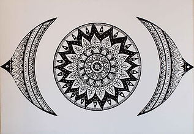
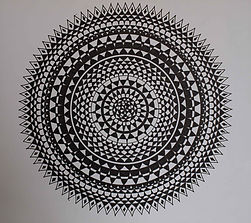
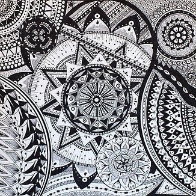

Spécialisée en relaxation dynamique
et en relation d’aide
Il s’agit de mettre en couleur un dessin centré ou de le créer. Beaucoup de personnes perçoivent le mandala comme un coloriage qui serait réservé aux enfants. Je reconnais que sur la forme ça en a tout l’air, mais détrompez-vous ! Il ne s’agit pas d’un simple dessin centré dans un cercle. C’est une forme-cible, organisée autour d’un point focal qui sollicite la verticalité intérieure et tous les niveaux de conscience de soi en aidant à leur remise en cohérence. Ainsi cet outil, et en fonction de l’usage qui en est fait, recouvre de nombreux intérêts :

Chaque séance, qu’elle soit en individuel ou en groupe, comporte trois temps :
Il y a véritablement un “avant” et un “après” lorsque la personne réalise un dessin centré.

Terme sanskrit signifiant cercle, centre, les mandalas sont des diagrammes dessinés et (ou) colorés que l’on retrouve dans toutes les traditions et civilisations (sous forme de rosaces dans nos églises par exemple). Ses origines sont universelles. Cet espace circulaire, dans lequel peuvent s’inclure d’autres formes archétypales, est considéré comme un espace sacré dans diverses traditions tel que le bouddhisme tibétain, où dans les temples hindous et à ce titre, il est considéré comme support de méditation. Laisser émerger un mandala, c’est apprivoiser cette fabuleuse énergie de création, source de joie et d’étonnements incessants. C’est parcourir notre monde intérieur dans un double mouvement de repli et de déploiement, dont la danse subtile nous conduit à l’équilibre, au centre. C’est un cheminement privilégié qui procède de ce point central d’où tout émerge et où tout retourne. Il répond à une sorte d’organisation intime de notre énergie gravitant autour de son centre et de notre façon de restituer le monde.
« À l’image de la cellule, il porte “l’information” de l’unité au cœur de la diversité. C’est une porte d’entrée vers l’intériorité et la conscience de soi. »
À une époque où nous sommes hyper connectés avec l’extérieur, il est important de se recentrer sur « l’essence-ciel », de prendre le temps de sentir la Vie couler en Soi et de se reconnecter à son centre, reflet du Soi et de l’Universalité. Créer des mandalas est tour à tour vivifiant, apaisant, régénérant et thérapeutique ; c’est une porte inter-dimensionnelle et un merveilleux espace de création. Du plaisir ludique et artistique à la profonde méditation, il existe de nombreuses façons de l’investir. Chaque création de mandala est unique et correspond à l’instant présent de celui qui le réalise.

En 1918 Carl Gustav Jung écrivait ceci :
« Tous les matins, j’esquissais dans un carnet un petit dessin en forme de rond, un mandala, qui semblait correspondre à ma situation intérieure. En m’appuyant sur ces images, je pouvais observer, jour après jour, les transformations psychiques qui s’opéraient en moi... Ce n’est que lentement que je trouvai ce que signifie à proprement parler un mandala : Formation, Transformation. »
C’est ainsi qu’il utilisa cette forme centrée auprès de ses patients.
Plus tard Marie Pré, institutrice confrontée au manque d’attention de ses élèves, met au point un outil neuro-pédagogique pour les aider à se recentrer et être plus disponible pour les apprentissages. Pour cela elle s’est appuyée sur des recherches scientifiques, notamment en science de l’éducation.
« À la suite de ses rencontres et sur la base du modèle de l’organisation cérébrale de Mac Lean, Marie Pré explique comment les stress qui affectent les étages automatiques du cerveau bloquent la circulation de l’influx nerveux. Elle montre comment l’expression dans cette structure permet une régulation de ce processus. Le tour du mandala délimite un territoire protégé, à l’intérieur duquel peut se développer facilement une activité créatrice. Les stress émotionnels sont déchargés par le plaisir de jouer avec les tons et les couleurs pour décorer une forme qui nous plaît et que nous avons librement choisie. Les fonctions réceptives et actives s’harmonisent par la stimulation grâce au réveil de l’imagination, de l’intuition et de la créativité malheureusement trop absentes dans un système éducatif plus centré sur la logique et l’analyse. Marie Pré parle de « mise en cohérence cérébrale » car l’harmonisation des deux hémi-cerveaux va stimuler la capacité de synthèse intérieure et extérieure. »